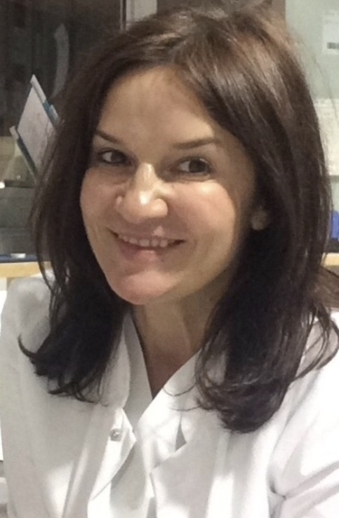

Meine internistisch-hausärztliche Praxis im Zentrum von Würzburg bietet Ihnen die bestmögliche individuelle Behandlung – mit einem erfahrenen, zertifizierten Team an Ihrer Seite.
Von der hausärztlichen Grundversorgung über moderne Diagnostik bis zu speziellen Schwerpunkten – alles unter einem Dach.
Facharzt- und Zusatzqualifikationen von Dr. Ciobanu
Ein Auszug aus unserem Leistungsangebot
Gerne beraten wir Sie auch auf Englisch, Rumänisch, Spanisch, Türkisch und Französisch.
Wir sind akademische Lehrpraxis der Universität Würzburg und bilden Medizinstudierende sowie medizinische Fachangestellte aus. Zudem verfügen wir über die Befugnis zur Weiterbildung zum Facharzt für Innere und Allgemeinmedizin.
Termine außerhalb der Sprechzeiten sind nach Vereinbarung möglich. Aktuelle Urlaubs- und abweichende Zeiten finden Sie stets bei Google Maps.
Im Notfall erreichen Sie den ärztlichen Bereitschaftsdienst unter 116 117 (KVB-Bereitschaftspraxis am Juliusspital).
Bei lebensbedrohlichen Notfällen wählen Sie bitte die 112.
Gut erreichbar mit öffentlichen Verkehrsmitteln (Würzburger Marktplatz). Parkmöglichkeiten am Kardinal-Döpfner-Platz und am Paradeplatz.
Jetzt anrufen & Termin vereinbaren